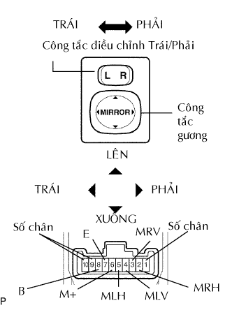

OUTER MIRROR SWITCH > INSPECTION |
| 1. INSPECT OUTER MIRROR SWITCH ASSEMBLY |
|  |
The L position of the left/right adjustment switch: Measure the resistance of the mirror switch.
| Tester Connection | Switch Condition | Specified Condition |
| 4 (MLV) - 8 (B) 6 (M+) - 7 (E) | UP | Below 1 Ω |
| 4 (MLV) - 7 (E) 6 (M+) - 8 (B) | DOWN | Below 1 Ω |
| 5 (MLH) - 8 (B) 6 (M+) - 7 (E) | LEFT | Below 1 Ω |
| 5 (MLH) - 7 (E) 6 (M+) - 8 (B) | RIGHT | Below 1 Ω |
The R position of the left/right adjustment switch: Measure the resistance of the mirror switch.
| Tester Connection | Switch Condition | Specified Condition |
| 3 (MRV) - 8 (B) 6 (M+) - 7 (E) | UP | Below 1 Ω |
| 3 (MRV) - 7 (E) 6 (M+) - 8 (B) | DOWN | Below 1 Ω |
| 2 (MRH) - 8 (B) 6 (M+) - 7 (E) | LEFT | Below 1 Ω |
| 2 (MRH) - 7 (E) 6 (M+) - 8 (B) | RIGHT | Below 1 Ω |